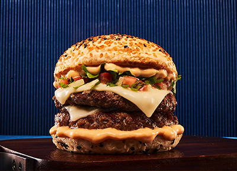

Nossos Hambúrgueres

Hambúrguer com cheddar e cebola caramelizada
Simples de ser feito, difícil vai ser resistir ao sabor desse hambúrguer. Aqui, a carne escolhida para o seu preparo é a fraldinha. Para deixar o sanduíche ainda mais gostoso, cheddar e cebola caramelizada também entram em cena.

Hambúrguer com queijo e bacon
Essa é uma ótima receita para quem busca cremosidade no seu sanduíche. Sabe por quê? Aqui, além de aprender a preparar o hambúrguer, você também confere como fazer um creme de cheddar com catupiry.

Hambúrguer de picanha
Picanha é uma ótima pedida para o preparo de um hambúrguer gourmet, certo? Aqui, a carne é moída duas vezes, misturada com bacon moído, manteiga, chimichurri, pimenta e sal. Além disso, você pode optar por grelhar ou assar a carne.

Hambúrguer com gorgonzola
Cebola caramelizada na cerveja e queijo gorgonzola são os diferenciais dessa receita. Aqui, a dica é usar o acém moído, pois a quantidade de gordura dessa carne é ideal para o preparo de um hambúrguer gourmet. Assim, ele fica com uma textura bem molhadinha.

Hambúrguer de costela
Dá pra fazer hambúrguer gourmet usando costela moída? Claro! Assim, seu lanche fica com gostinho de churrasco e qualquer um pode se surpreender com o sabor. O sanduíche ainda conta com cheddar, cebolinha, cebola grelhada, maionese, fumaça líquida e mais alguns temperos.

Hambúrguer de acém com patinho
Usar acém e patinho mescla a gordura do acém e o sabor do patinho, o que rende um hambúrguer bem gostoso. Mas não é só isso. As carnes são misturadas e recheadas com cheddar. Para finalizar o lanche, você também vai precisar de bacon, tomate, maionese, mostarda e ketchup.